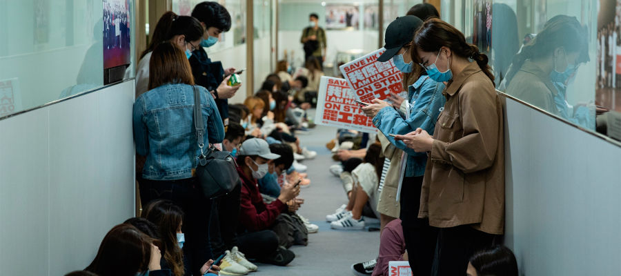
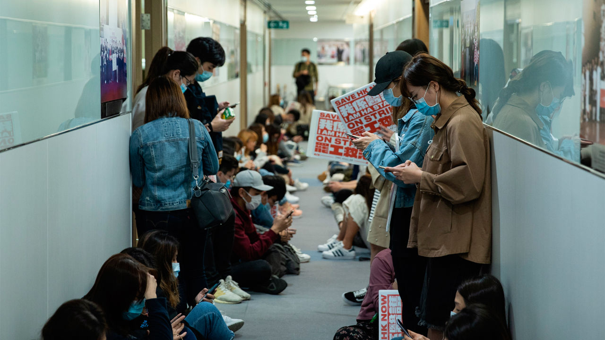
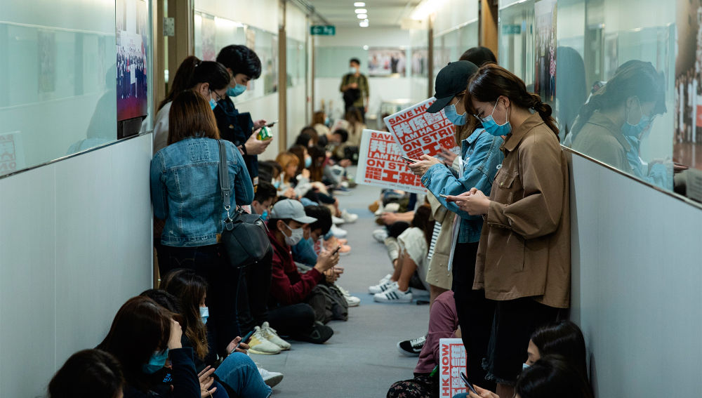

La OMS recomienda profundizar sobre las primeras pistas de la Covid



El grupo de expertos de la Organización Mundial de Salud (OMS) que visitó China con la intención de estudiar el origen de la pandemia ha recomendado que se intensifique el rastreo de los contactos del primer paciente de Covid conocido, en Wuhan.
La cadena estadounidense CNN ha informado acerca de la intención de los expertos de obtener una mayor información acerca de la cadena de suministros de una docena de comerciantes en el mercado chino de Huanan.Es en este sitio donde creen que comenzó la propagación temprana de la Covid-19, a finales de 2019, aunque varias fuentes apuntan a que se están siguiendo diferentes líneas clave de investigación.
El primer paso de esta investigación será el de obtener más detalles acerca de los contactos del primer paciente confirmado con síntomas de Covid, tratado el 8 de diciembre de 2019 en Wuhan.Aunque no ha sido identificado públicamente, los investigadores han asegurado que se trata de un oficinista de unos 40 años, que no había realizado viajes exóticos ni tenía antecedentes de contactos con infectados.
En la reunión que mantuvo con el equipo de la OMS, indicó que sus padres habían visitado 'un mercado local de productos frescos en Wuhan', aunque descartó que fuera el de mariscos de Huanan.Además, Peter Daszak, miembro del equipo de expertos, ha explicado que los científicos chinos confirmaron el negativo de los padres del paciente en la prueba de la enfermedad, aunque no rastrearon los contactos de los progenitores en el mercado.
Otros científicos independientes aseguraron a la cadena que es bastante 'sorprendente' e 'inverosímil' que los expertos chinos no profundizaran mucho más en las primeras huellas del virus.
Por su parte, Jake Sullivan, asesor de seguridad del presidente Joe Biden, ha recriminado a China la falta de 'datos clave' sobre el origen y la propagación del virus, contraído ya por más de 100 millones de personas.'Están a punto de publicar un informe sobre los orígenes de la pandemia sobre el que tenemos preguntas, porque no creemos que China haya puesto a disposición suficientes datos de los orígenes, de cómo comenzó a propagarse esta pandemia, tanto en China y luego en todo el mundo', declaró Sullivan el pasado domingo en la cadena CBS News.
La OMS ya descartó el pasado 9 de febrero que el coronavirus pudiera haber sido originado en un laboratorio y apuntó a que la Covid tenía origen animal, aunque aseguró que aún no tenían pistas de qué animal podía provenir.
Posted On: 2021-02-22T11:43:00
Content Date: 2021-02-22
Download Date: 2021-04-21
Document ID: L0C04APIY